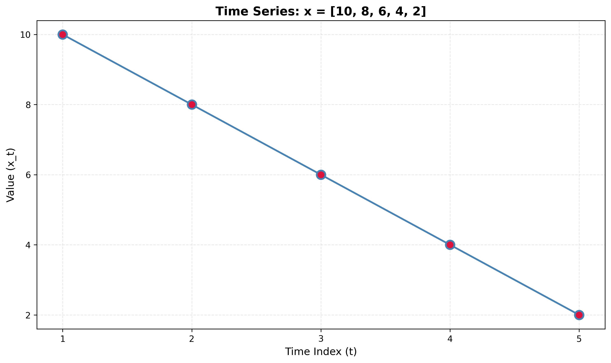
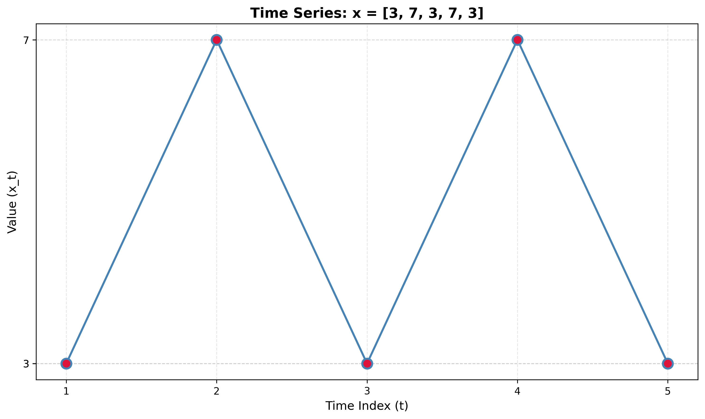
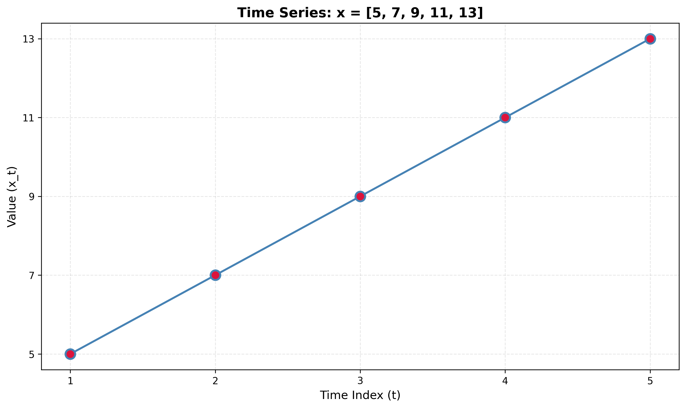
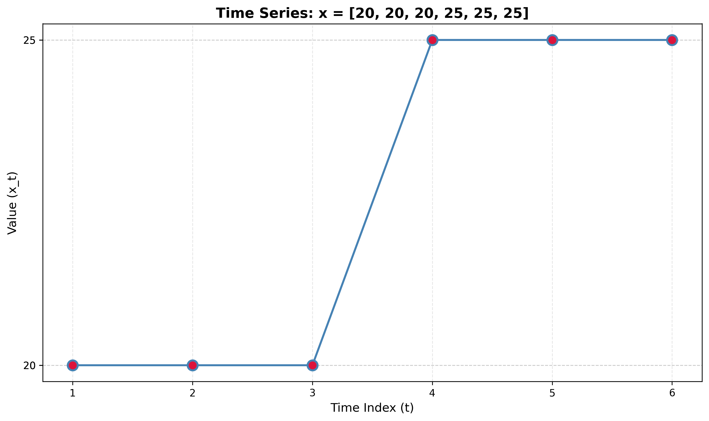
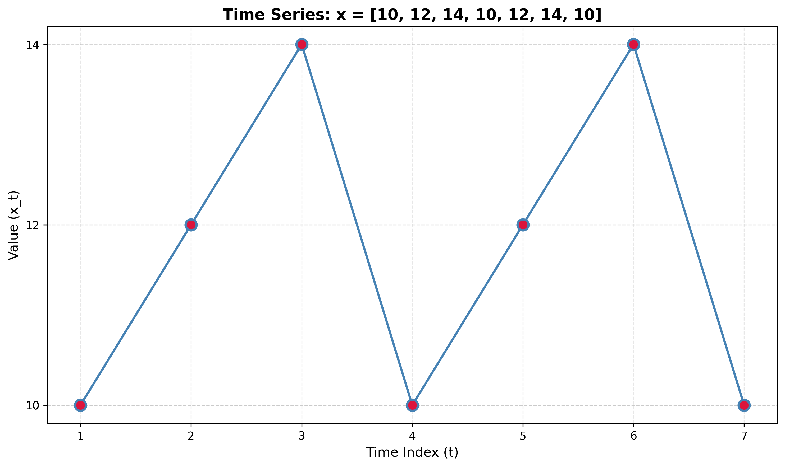
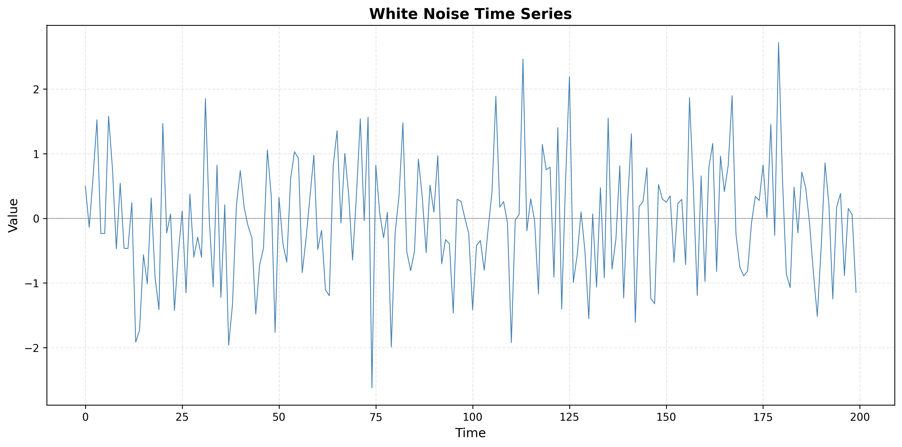
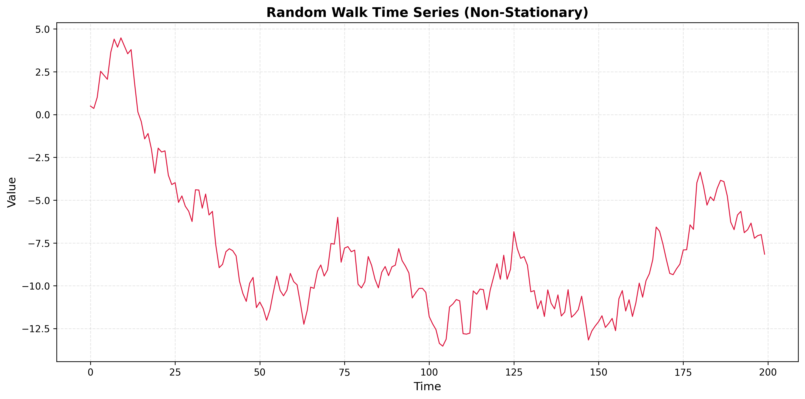
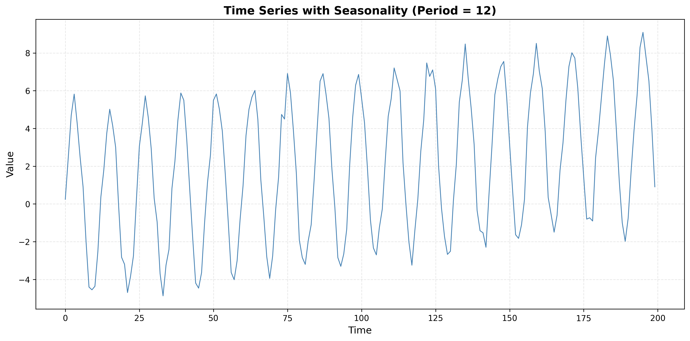
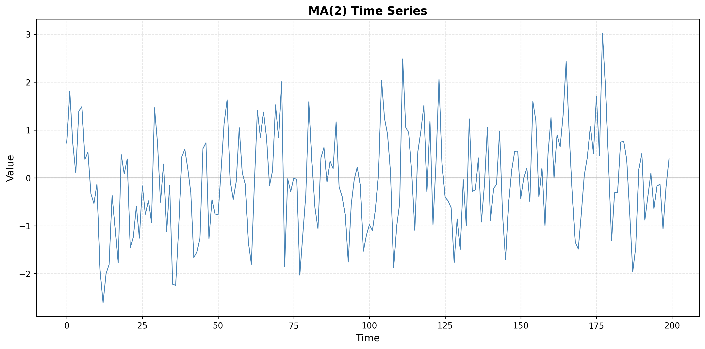
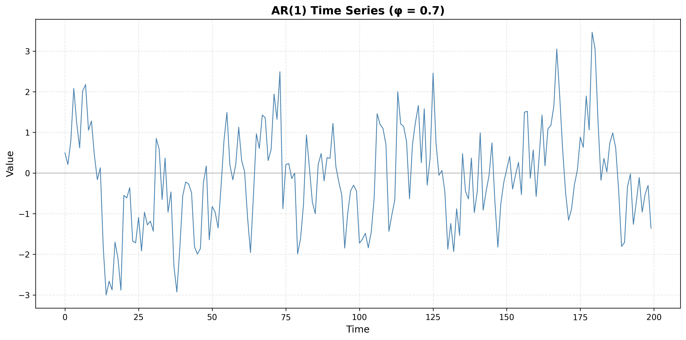

Time Series Problem Set: Autocorrelation Function (ACF)
Problem Set (Without Solutions) - Undergraduate Level
Calculation Guide: Mean, Variance, Autocovariance, and ACF
Use the formulas and code below as a reference when computing statistics by hand or checking your work. For a sample time series x₁, x₂, …, xₙ of length n:
Sample mean
Sample variance (with n−1 denominator)
Autocovariance at lag k
For lag k, use the demeaned series (subtract the mean first). With n observations, there are n−k pairs (xᵢ − x̄, xᵢ₊ₖ − x̄).
Some texts use 1/n instead of 1/(n−k); be consistent. For this problem set, using 1/(n−k) or 1/n is acceptable as long as you use the same convention for γ(0) and γ(k).
Autocorrelation at lag k
So ρ(0) = 1 always. Autocorrelation is dimensionless and lies in [−1, 1].
Python: computing mean, variance, and ACF
Example with a small array (replace with your data). For ACF, mean removal is applied.
import numpy as np
def sample_mean(x):
return np.mean(x)
def sample_var(x):
return np.var(x, ddof=1) # ddof=1 gives 1/(n-1)
def autocovariance(x, k):
"""Sample autocovariance at lag k, with mean removal."""
x = np.asarray(x)
n = len(x)
x_centered = x - np.mean(x)
if k >= n:
return 0.0
return np.sum(x_centered[:-k] * x_centered[k:]) / (n - k)
def autocorrelation(x, k):
"""Sample autocorrelation at lag k."""
return autocovariance(x, k) / autocovariance(x, 0)
# Example: compute for a short series
x = np.array([2, 4, 6, 8, 10])
print("Mean:", sample_mean(x))
print("Variance:", sample_var(x))
for lag in [0, 1, 2]:
print(f"ACF({lag}):", autocorrelation(x, lag))Without mean removal (for comparison in Exercise Type 2): use xᵢ and xᵢ₊ₖ directly in the product sum instead of (xᵢ − x̄)(xᵢ₊ₖ − x̄). In code, replace x_centered with x in the autocovariance sum.
Exercise Type 1: Numerical ACF Calculation
Problem 1.1
Given the time series: x = [2, 4, 6, 8, 10]

Compute:
- The sample mean x̄
- The sample variance s²
- The autocovariance γ(k) for lags k = 0, 1, 2
- The autocorrelation ρ(k) for lags k = 0, 1, 2
Problem 1.2
Given the time series: x = [5, 5, 5, 5, 5]
Compute the autocovariance and autocorrelation. What happens when all values are identical?
Problem 1.3
Given the time series: x = [10, 8, 6, 4, 2]
Compute the autocovariance γ(k) and autocorrelation ρ(k) for lags k = 0, 1, 2.
Problem 1.4
Given the time series: x = [3, 7, 3, 7, 3]
Compute the autocovariance and autocorrelation for lags k = 0, 1, 2, 3.
Problem 1.5
Given the time series: x = [12, 15, 18, 12, 15, 18, 12]
Compute the autocovariance and autocorrelation for lags k = 0, 1, 2, 3.
Exercise Type 2: Effect of Mean Removal
Problem 2.1
Given the time series: x = [5, 7, 9, 11, 13]
- Compute the autocovariance without removing the mean.
- Compute the autocovariance with mean removal.
- Compare the results and explain why mean removal is necessary.
Problem 2.2
Given the time series: x = [100, 102, 104, 106, 108]
- Compute autocorrelation at lag 1 without mean removal.
- Compute autocorrelation at lag 1 with mean removal.
- Explain the difference.
Problem 2.3
Given the time series: x = [20, 20, 20, 25, 25, 25]
Compare the autocorrelation at lag 1 computed with and without mean removal. What does this tell you about the series?
Problem 2.4
Given the time series: x = [1, 3, 5, 1, 3, 5]
Compute autocorrelation at lag 2 with and without mean removal. Explain why the results differ.
Problem 2.5
Given the time series: x = [10, 12, 14, 10, 12, 14, 10]
- Compute autocorrelation at lag 3 with and without mean removal.
- Explain which method gives the correct interpretation of the series' periodic structure.
Exercise Type 3: Interpreting ACF Patterns
Problem 3.1
A time series has an ACF plot where ρ(0) = 1 and ρ(k) ≈ 0 for all k > 0, with values randomly scattered around zero within the confidence bands.
- What type of process does this indicate?
- What are the characteristics of such a process?
- Generate a synthetic time series with this ACF pattern and plot both the series and its ACF.
Problem 3.2
A time series has an ACF plot showing ρ(k) that decays very slowly, remaining positive and significant even at large lags (e.g., ρ(20) > 0.5).
- What does this pattern indicate?
- What type of non-stationarity is likely present?
- Generate a synthetic time series with this ACF pattern and plot both the series and its ACF.
Problem 3.3
A time series has an ACF plot showing oscillatory (sinusoidal) behavior, with autocorrelations alternating between positive and negative values in a periodic pattern.
- What does this pattern indicate?
- What type of seasonality or cyclical behavior is present?
- Generate a synthetic time series with this ACF pattern and plot both the series and its ACF.
Problem 3.4
A time series has an ACF plot where ρ(k) shows a sharp cutoff after lag q = 2, with ρ(1) and ρ(2) being significant, but ρ(k) ≈ 0 for all k > 2.
- What type of process does this suggest?
- What is the likely model order?
- Generate a synthetic time series with this ACF pattern and plot both the series and its ACF.
Problem 3.5
A time series has an ACF plot showing exponential decay: ρ(k) starts high and decays gradually, remaining positive but decreasing, with no sharp cutoff.
- What type of process does this indicate?
- How does this differ from the MA process pattern?
- Generate a synthetic time series with this ACF pattern and plot both the series and its ACF.
Exercise Type 4: Physiological Time-Series Interpretation
Problem 4.1
Consider a heart rate time series where the ACF shows:
- Strong positive autocorrelation at lag 1 (ρ(1) ≈ 0.8)
- Rapid decay to near zero by lag 5
- No significant periodic patterns
- What does this tell you about the memory length of the process?
- What AR/MA/ARIMA model order would be appropriate?
- Would deep learning be necessary for forecasting?
- Generate a synthetic heart rate time series with these characteristics and plot the series and ACF.
Problem 4.2
Consider a blood pressure time series where the ACF shows:
- Very slow decay, remaining above 0.5 even at lag 20
- No clear periodic pattern
- Gradual decrease rather than sharp cutoff
- What does this indicate about the process?
- What preprocessing step might be necessary?
- What model would be appropriate after preprocessing?
- Generate a synthetic blood pressure time series and plot the series and ACF.
Problem 4.3
Consider an EEG-like signal where the ACF shows:
- Oscillatory pattern with period approximately 10 time steps
- Significant autocorrelation at lags 10, 20, 30
- Decay in amplitude of oscillations over time
- What does this indicate about the signal?
- What type of seasonality is present?
- Would a seasonal ARIMA model be appropriate?
- Generate a synthetic EEG-like signal and plot the series and ACF.
Problem 4.4
Consider a respiratory rate time series where the ACF shows:
- Sharp cutoff after lag 2
- ρ(1) ≈ 0.6, ρ(2) ≈ 0.3
- ρ(k) ≈ 0 for k > 2
- What type of process does this indicate?
- What is the memory length?
- What model order would be appropriate?
- Generate a synthetic respiratory rate time series and plot the series and ACF.
Problem 4.5
Consider a body temperature time series where the ACF shows:
- Exponential decay starting at ρ(1) ≈ 0.9
- Gradual decrease: ρ(5) ≈ 0.5, ρ(10) ≈ 0.2
- All values positive, no oscillations

- What type of process does this indicate?
- What is the approximate memory length?
- Would deep learning provide significant advantages over traditional methods?
- Generate a synthetic body temperature time series and plot the series and ACF.
Summary
This problem set covers:
- Numerical ACF Calculation: Manual computation of autocovariance and autocorrelation, including edge cases (constant series, zero variance).
- Mean Removal Effect: Understanding why mean removal is essential for correct autocorrelation computation and avoiding spurious correlations.
- ACF Pattern Interpretation: Identifying process types (white noise, trend, seasonality, AR, MA) from ACF plots with Python visualizations.
- Physiological Time-Series: Applying ACF analysis to real-world biomedical signals, determining appropriate models, and assessing when advanced methods are needed.
This problem set provides exercises for practice. Solutions are available separately.